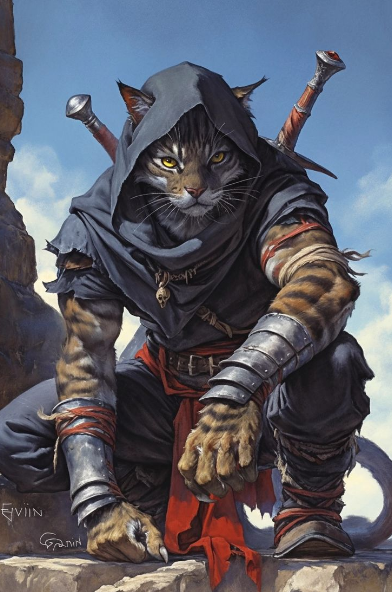

L’histoire d’Eldoria débute en l’an 3 après la fondation de ce nouveau monde, né des cendres d’une catastrophe sans précédent : le “Grand Cataclysme”. Cet événement, dont l’origine reste entourée de mystère, frappa le continent en l’an -50 avant Eldoria (ou 2751 de l’ère Post-Gathwyn). Il s’agissait d’une déflagration magique d’une ampleur inimaginable, déclenchée, selon certains, par l’arrogance des mages de Gathwyn cherchant à manipuler des forces interdites, ou, selon d’autres, par une punition divine visant à purger un monde corrompu. Le sol se déchira, ouvrant des failles abyssales s’étendant sur des centaines de kilomètres, engloutissant villages, cités et royaumes entiers. Les pertes furent colossales, touchant toutes les races – humains, elfes, nains et bien d’autres. L’an 0 d’Eldoria fut marqué par l’effondrement de Gathwyn, la glorieuse capitale du Culte de la Lumière, qui sombra dans le chaos, signalant la fin d’une ère et le début d’une lutte pour la survie.
Gathwyn, surnommée l’Empire de la Lumière, était autrefois le joyau du continent. Située sur les rives scintillantes de la mer de Fer, cette cité sacrée était un chef-d’œuvre d’architecture, avec ses murailles imposantes et ses flèches dorées qui perçaient les cieux. Le Culte de la Lumière, à la fois institution religieuse et pouvoir politique, y régnait en maître, imposant une foi absolue à travers ses prêtres et ses chevaliers saints. Mais lorsque le Grand Cataclysme frappa, les fondations de Gathwyn furent éventrées par une faille gigantesque. La ville s’effondra lentement, ses temples majestueux réduits en ruines, tandis qu’une mare de sang – dont nul ne connaît l’origine – se forma au cœur des décombres, baignant les lieux d’une lueur rougeâtre et sinistre. Les survivants parlent d’un crépuscule éternel qui enveloppa la cité, comme si le soleil lui-même refusait de contempler sa chute.
Le Grand Cataclysme laissa Eldoria en lambeaux. Les failles déchirèrent le paysage, engloutissant des montagnes, détournant des rivières et noyant des terres sous des océans improvisés. Des créatures cauchemardesques, vomies par les abysses, semèrent la terreur parmi les survivants. L’Empire de la Lumière, jadis un phare d’unité, n’était plus qu’un souvenir, et les royaumes qui s’étaient autrefois prosternés devant Gathwyn sombrèrent dans l’anarchie. Les races d’Eldoria – humains pragmatiques, elfes reclus dans leurs forêts, nains terrés dans leurs forteresses souterraines – durent s’adapter à un monde hostile. Les ressources devinrent rares, les alliances fragiles, et la lutte pour la survie devint le quotidien. Dans ce chaos, certains virent une opportunité de rebâtir, tandis que d’autres succombèrent au désespoir ou à la sauvagerie.
Privé de Gathwyn, le Culte de la Lumière, autrefois un monolithe de foi et de pouvoir, se fissura. Les prêtres et les fidèles, désorientés par la perte de leur cité sainte, divergèrent dans leurs interprétations du Cataclysme. Certains, les Gardiens de la Lumière, jurèrent de restaurer l’ancienne gloire de l’Empire, voyant dans la catastrophe une épreuve divine. D’autres, comme les Sombres Frères, se tournèrent vers les failles, convaincus que des vérités interdites s’y cachaient. Des sectes mineures émergèrent, certaines prônant l’ascétisme, d’autres l’hérésie pure. Les temples abandonnés devinrent des refuges pour ces factions rivales, tandis que les peuples d’Eldoria, divisés par la peur et la méfiance, s’affrontaient pour des miettes de pouvoir ou de survie, transformant un monde jadis uni en un champ de bataille idéologique et physique.
Les failles, plus que de simples cicatrices sur la terre, étaient des portails vers un royaume insondable. De leurs profondeurs émergèrent des créatures d’une horreur indicible : des bêtes aux membres tordus, des entités spectrales aux yeux luminescents, et des êtres intelligents aux desseins obscurs. Les Khorlaks, par exemple, devinrent une menace omniprésente, mi-humanoïdes mi-monstres, semant la destruction là où ils passaient. Certains érudits avancèrent que ces failles étaient liées à un pouvoir ancien, peut-être une magie oubliée ou une entité cosmique réveillée par le Cataclysme. Les habitants d’Eldoria, terrifiés, les surnommèrent “les bouches du Néant”, et leur présence transforma le monde en un lieu où la peur et la curiosité se mêlaient, poussant certains à explorer ces abysses, et d’autres à les fuir à tout prix.
Dans ce monde brisé, des héros émergèrent des cendres. Ces survivants – aventuriers, mages, guerriers ou simples âmes désespérées – entreprirent des quêtes périlleuses pour comprendre les failles, combattre les créatures abyssales ou retrouver un semblant d’espoir. Certains, comme les Explorateurs des Profondeurs, plongèrent dans les ténèbres pour en percer les secrets, risquant leur vie pour des artefacts ou des connaissances perdues. D’autres, portés par la vengeance ou la rédemption, traquèrent les monstres qui avaient détruit leurs foyers. Leurs récits, souvent tragiques, parlaient de pertes immenses mais aussi de courage face à l’adversité. Ces quêtes, bien que disparates, convergèrent vers un objectif commun : ramener l’ordre dans un monde au bord de l’effondrement total.
Au milieu du désespoir, une lueur d’espoir naquit sous la forme d’une ancienne prophétie. Gravée dans les archives sacrées de Gathwyn avant sa chute, elle parlait d’un “Héritier de la Lumière”, un être destiné à rallumer la flamme divine et à sceller les failles. Les détails étaient flous – certains disaient qu’il s’agirait d’un descendant des prêtres de l’Empire, d’autres d’un élu surgi du peuple. Les Gardiens de la Lumière y voyaient une promesse de restauration, tandis que des factions comme les Éveillés du Vide doutaient de son authenticité, la considérant comme une fable manipulatrice. Cette prophétie devint un symbole disputé, inspirant des expéditions pour retrouver l’Héritier, mais aussi des conflits entre ceux qui y croyaient et ceux qui la rejetaient.
Alors que certains s’accrochaient à l’espoir de la prophétie ou à la reconstruction, d’autres forces, plus sinistres, se réveillèrent dans l’ombre. Des cultes voués aux créatures abyssales gagnèrent en puissance, et des rumeurs parlèrent d’anciens maux, emprisonnés sous la terre avant le Cataclysme, désormais libres. Les Nomades des Cendres murmuraient que le monde était entré dans une ère de dualité : l’espoir des survivants contre la noirceur tapie dans les failles. Cette tension donna naissance à une nouvelle ère, où les races d’Eldoria durent choisir entre s’unir pour un avenir meilleur ou céder à la destruction. Dans les tavernes et les ruines, une menace grandissante se faisait sentir, un défi que seuls les plus courageux – ou les plus fous – oseraient affronter.
But : Restaurer l’Empire de la Lumière et ramener le Culte à sa gloire passée.
Croyances : Le Cataclysme est une épreuve divine visant à purifier les âmes. Seule la foi en la Lumière peut sauver Eldoria.
Pratiques : Rituels sacrés, entraînement militaire rigoureux et croisades contre les hérétiques. Ils reconstruisent des temples et prêchent l’unité sous leur bannière.
Structure : Une hiérarchie stricte dirigée par un Grand Prêtre, avec des chevaliers saints et des prêtres-guerriers formant l’élite, tandis que les fidèles servent comme base.
But : Exploiter les secrets des failles pour obtenir un pouvoir absolu.
Croyances : Les créatures abyssales sont des clés vers une vérité supérieure, et le Cataclysme est une porte ouverte sur une nouvelle ère de domination.
Pratiques : Rituels occultes, pactes avec des entités des failles et études des magies interdites. Ils opèrent dans l’ombre, souvent masqués.
Structure : Une confrérie secrète de mages et de renégats, sans chef unique, mais unie par la soif de pouvoir et de connaissance.
But : Établir un ordre où seuls les forts prospèrent, en utilisant les failles comme armes.
Croyances : La faiblesse a causé la chute de Gathwyn ; la survie exige la domination des puissants sur les faibles.
Pratiques : Entraînement brutal, collecte d’artefacts sombres et manipulation politique pour écraser leurs rivaux.
Structure : Une élite de guerriers et de stratèges issus de diverses races, dirigée par un conseil des plus impitoyables.
But : Protéger les innocents et rebâtir une société viable pour tous.
Croyances : L’unité et la compassion sont les seules voies vers la survie dans ce monde brisé.
Pratiques : Construction de refuges, défense contre les créatures et création de routes sécurisées pour le commerce et les migrations.
Structure : Une démocratie dirigée par des leaders élus, composée de soldats, artisans et citoyens unis par la solidarité.
But : Découvrir les origines des failles et trouver des solutions pour guérir Eldoria.
Croyances : La connaissance est la clé pour surmonter le Cataclysme ; les failles renferment des réponses autant que des dangers.
Pratiques : Expéditions dans les failles, étude d’artefacts et affrontements avec les créatures pour collecter des données.
Structure : Un réseau informel de savants, mages et aventuriers, partageant leurs découvertes lors de rares rassemblements.
But : Comprendre les forces cosmiques derrière le Cataclysme et s’y connecter.
Croyances : Les failles sont des fenêtres sur un Vide primordial, une réalité au-delà de la compréhension mortelle.
Pratiques : Méditation près des failles, rituels mystiques et visions prophétiques pour communier avec le Vide.
Structure : Cercles d’initiés dirigés par des mystiques, chacun interprétant le Vide à sa manière, parfois jusqu’à la folie.
But : Unir toutes les races dans une société égalitaire et libre.
Croyances : Le Cataclysme a aboli les hiérarchies ; l’avenir appartient à l’égalité et à la coopération.
Pratiques : Diplomatie, création de conseils multiraciaux et défense des opprimés contre les tyrans.
Structure : Un conseil de représentants de chaque race, prenant des décisions par consensus, soutenu par une milice diverse.
But : Éradiquer toutes les créatures abyssales pour protéger Eldoria.
Croyances : Les failles sont une malédiction, et leurs habitants une menace à exterminer sans pitié.
Pratiques : Chasse méthodique, forge d’armes spécialisées et traque solitaire ou en petits groupes.
Structure : Ordres militaires stricts, où chaque chasseur prête serment de dévotion à la cause, souvent jusqu’à la mort.
But : Préserver les savoirs et artefacts de l’Empire de la Lumière pour un avenir meilleur.
Croyances : L’héritage de Gathwyn contient les clés pour restaurer l’équilibre du monde.
Pratiques : Garde de sites sacrés, récupération d’objets anciens et étude des textes oubliés.
Structure : Une société secrète de gardiens, moines et érudits, liés par un serment de protection.
But : Survivre librement dans les terres dévastées, loin des conflits.
Croyances : Les civilisations fixes sont vouées à l’échec ; la liberté et l’adaptation sont la vraie force.
Pratiques : Vie nomade, chasse, troc et évitement des grandes batailles, guidés par une sagesse pratique.
Structure : Tribus fluides dirigées par des “Chamanes du Vent”, chefs charismatiques et spirituels.
Bonus : +1 Res +2 Int +1 Ment -2 Char (Bonus épée à une main)
Caractéristiques : Résilients et adaptables, les humains sont une race nombreuse qui a connu une grande perte depuis le cataclysme, mais qui se bat pour survivre et reconstruire. Ils sont connus pour leur capacité à s'unir et à s'adapter à de nouvelles situations.
Rôle dans les Factions : Les humains sont présents dans presque toutes les factions, que ce soit dans les Gardiens de la Lumière, la Coalition des Peuples Libérés ou les Veilleurs de l'Ancienne Garde. Leur diversité en fait des alliés et des rivaux précieux dans ce monde brisé.
Bonus : +3 Dex +1 Mag -2 Res -1 Ment (Bonus arc)
Caractéristiques : Élégants et agiles, les elfes sylvains possèdent une profonde connexion avec la nature. Ils ont survécu à l'effondrement de nombreuses civilisations en se retirant dans leurs forêts mystérieuses. Ils sont des experts dans le maniement de l'arc et ont des bases en magie.
Rôle dans les Factions : Les elfes sylvains se retrouvent souvent dans la faction des Explorateurs des Profondeurs et les Veilleurs de l'Ancienne Garde, cherchant à préserver la connaissance de leur civilisation. Ils sont également présents dans la Coalition des Peuples Libérés, prônant la paix et l'unité.
Bonus : +3 For +2 Res -2 Char -1 Mag (Bonus masse, marteau à une main)
Caractéristiques : Résistants et robustes, les nains des profondeurs sont des maîtres artisans et des guerriers redoutables. Depuis le cataclysme, ils ont souvent été contraints de vivre sous terre, dans des cités protégées ou dans des zones reculées des montagnes.
Rôle dans les Factions : Les nains font partie de la Coalition des Peuples Libérés, où ils défendent la reconstruction de la civilisation. Ils sont également présents dans les Chasseurs du Néant, en raison de leur expertise en matière de technologie et de guerre souterraine contre les créatures abyssales.
Bonus : +2 Char +1 Mag -2 Res -1 For (Bonus dague)
Caractéristiques : Les Khorlaks sont une race abyssale née des failles. Ce sont des créatures à la fois humanoïdes, dotées de tentacules et de griffes, vivant dans les ténèbres. Ils sont les ennemis jurés des peuples d'Eldoria et sont vus comme des menaces terrifiantes. Ils sont spécialisés dans la magie noire.
Rôle dans les Factions : Bien qu'ils soient des ennemis naturels, certains Khorlaks se sont infiltrés dans les factions comme les Sombres Frères ou même les Éveillés du Vide, cherchant à exploiter leur nature abyssale pour des fins mystérieuses.
Bonus : +2 Res +3 Mag +1 Int -4 Ment -1 Dex (Bonus hache à une main)
Caractéristiques : Les Draïdiens sont une race ancienne et semi-divine, proches des forces élémentaires de la terre et du ciel. Ils sont grands, avec une peau de pierre et des cheveux comme des racines d'arbres. Ils ont le pouvoir de manipuler la terre et la nature.
Rôle dans les Factions : Ils sont liés aux Veilleurs de l'Ancienne Garde et aux Explorateurs des Profondeurs, cherchant à préserver l'héritage ancien et à comprendre la nature des failles. Leur sagesse ancestrale les place aussi dans la Coalition des Peuples Libérés.
Bonus : +5 Mag +1 Int -3 Dex -3 For (Bonus bâtons magiques)
Caractéristiques : Les Draegars sont des créatures spectrales qui peuvent prendre une apparence à peu près humaine (1 tour de canalisation pour se mettre en forme spectrale), des âmes errantes d'êtres défunts qui se sont retrouvées piégées entre le monde des vivants et des morts à cause du cataclysme. Ils possèdent des pouvoirs de nécromancie et peuvent posséder d'autres êtres.
Rôle dans les Factions : Certains Draegars se sont unis sous la bannière des Sombres Frères, cherchant à exploiter leur capacité à manipuler la mort. D'autres, plus bienveillants, cherchent à réparer les torts causés par le cataclysme en travaillant avec la Légion des Survivants ou les Éveillés du Vide.
Bonus : +4 Dex +1 For -2 Ment -2 Mag (Bonus dague, hache à une main, marteau à une main)
Caractéristiques : Une race de créatures félines, agiles et rusées, les Ykharas ont des griffes acérées et des sens aiguisés. Ils sont originaires des terres sauvages et ont survécu aux cataclysmes en s'adaptant à la vie en solitaire ou en petites tribus nomades.
Rôle dans les Factions : Ils se retrouvent dans la faction des Nomades des Cendres et parfois dans la Coalition des Peuples Libérés, bien qu'ils restent souvent distants des grandes luttes de pouvoir, préférant se concentrer sur leur survie et leur indépendance.
Bonus : +6 Mag -2 For -2 Res -1 Ment (Bonus bâtons magiques)
Caractéristiques : Une race d'êtres ailés, descendants des anciens anges ou esprits célestes, qui ont survécu à l'effondrement en se retirant dans des lieux sacrés. Les Séraphins sont des êtres majestueux, dotés de pouvoirs de lumière et de guérison.
Rôle dans les Factions : Ils sont associés aux Gardiens de la Lumière, cherchant à restaurer l'ordre divin. Certains Séraphins se sont tournés vers la guérison des peuples dévastés, tandis que d'autres cherchent à reconstruire le pouvoir de l'Empire de la Lumière.
Bonus : +2 For +3 Res +1 Char -1 Mag -1 Ment -1 Int -1 Dex (Bonus épée à une main et à deux mains)
Caractéristiques : Les Skarjaks sont des créatures amphibies qui ont émergé des eaux englouties par le cataclysme. Dotés de nageoires et de peaux écailleuses, ils sont capables de respirer sous l'eau et sur terre. Leur société est tribale et leur technologie repose sur des savoirs anciens liés à l'eau et aux océans.
Rôle dans les Factions : Ils sont associés à la faction des Explorateurs des Profondeurs et sont souvent vus comme des alliés précieux pour ceux qui cherchent à explorer les failles sous-marines. Ils sont également parfois associés aux Chasseurs du Néant, car ils luttent contre les créatures des abysses.
Bonus : +5 Mag +3 Char -4 Int -2 Dex (Bonus épée à une main et marteau à une main)
Caractéristiques : Les Férymants sont des êtres élémentaires liés au feu et à la chaleur. Leur corps ressemble à des créatures de lave et de cendres en fusion. Ils ont la capacité de manipuler les flammes et la chaleur à volonté.
Rôle dans les Factions : Les Férymants sont présents dans la faction des Chasseurs du Néant, leur pouvoir de feu étant utile contre les créatures abyssales. Certains se retrouvent aussi parmi les Élus de l'Obscurité, utilisant leur pouvoir destructeur pour remodeler le monde à leur image.
Chaque race peut aller dans la faction qu'elle veut. Vous pouvez faire absolument ce que vous voulez, je vous impose juste de choisir une race parmi les 10 disponibles ainsi qu’une faction, sauf si vous voulez créer un personnage “neutre”.
Si vous tombez à 0 point de vie, l'aventure ne se termine pas, soit vous êtes soigné via une interaction quelconque à la fin de la scène (aucune garantie de ressusciter). Soit vous ferez des jets de dés jusqu'à ce que la valeur demandée soit bonne, chaque jet de dés raté affecte votre personnage aux niveaux de ses points de vie et ses statistiques (2 jets ratés = légère perte de stats), jusqu'à ce qu'une mort définitive s’en suive.
Pour finir, chaque race aura un bonus dans leurs domaines de prédilections, et un malus de points dans la caractéristique où ils sont le plus faible. (bonus et malus plus ou moins grand, propre à chaque race). Le racisme via certaines races sera aussi présent. Vous pouvez débuter l’aventure avec l’arme où vous avez un bonus propre à votre classe ou celle que vous voulez (Vous ne pouvez choisir qu’une seule arme).
Vous pouvez évidemment jouer un personnage qui n’a rien à voir avec son affinité. (Ex un Séraphins qui devient un chevalier qui va aller se taper au corps à corps). Mais vous en subirez les conséquences. Vous pouvez apprendre des sorts peu importe votre race.
Un système d’xp et de niveaux sera présent. Prendre un niveau = boost de 1 point dans une statistique + Possibilité d’apprendre une capacité. Peu importe ce que c’est tant que cela est raccord avec votre personnage. (Dash, combo, boost de stats temporaire, enchantement etc).
| Stat | Max | Description |
|---|---|---|
| Force (For) | 20 | Puissance physique, dégâts au corps à corps, capacité à soulever/porter, briser des objets, lutter. |
| Résistance (Res) | 20 | Endurance, santé générale, résistance aux blessures, maladies, poisons, fatigue et efforts prolongés. |
| Dextérité (Dex) | 20 | Agilité, acrobatie, escalade, discrétion, esquive, jets de perception, précision, maniement des armes à distance. |
| Intelligence (Int) | 20 | Logique, connaissances, résolution d'énigmes, mémoire, analyse, compréhension des langues et des systèmes magiques. |
| Magie (Mag) | 20 | Aptitude à lancer des sorts, puissance magique, contrôle des énergies surnaturelles, résistance aux effets magiques. |
| Charisme (Char) | 20 | Influence sociale, persuasion, intimidation, négociation, capacité à inspirer ou manipuler autrui. |
| Mentale (Ment) | 20 | Volonté, résistance mentale (peur, sommeil, faim, douleur), gestion du stress, ténacité face aux épreuves et aux effets psychiques. |
Vous avez 75 points de statistiques à investir où vous voulez.
Vos points de vie et de mana seront décidés via un jet de dés une fois votre première apparition dans le jdr. N’ayez pas peur si vous ratez vos jets de dés, une limite est fixée. (Vous ne pouvez pas avoir 3 points de vie et 1 de mana)
Vous êtes libre de faire le lore que vous voulez tant que celui-ci est raccord avec celui d’Eldoria. À la fin de votre histoire vous devrez vous retrouvez dans une taverne à Eldoria, vous aurez entendu parler d’une menace qui inquiète la capitale. Votre objectif sera d’éliminer celle-ci ou pas…
Une fois avoir pris connaissance du lore, des factions, des races et avoir mis vos points de stats en prenant en compte vos races, merci d’aller voir Lexannor (le MJ et accessoirement moi-même) afin de lui en faire part. Merci.
Pour créer votre personnage, utilisez la fiche de personnage Eldoria.